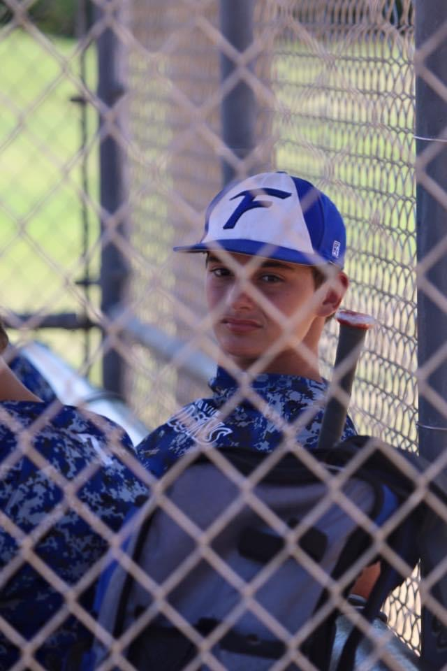

Sports
 My enitre life I have played sports. My dad put me into everything sport he could think of. Basketball, soccer, football, baseball, and basically all of the other mainstream sports at the time. I mostly stuck with baseball and soccer when i got into highschool. Honestly, I definitely could have gone somewhere with baseball, like every male above 30 says. I continue my passion with sports playing anything I can when I have the free time. I have recently gotten into watching football and funny enough it was my girlfriend that conviced me, and the Eagles having an amazing season.
Music
I have no musical talent whatsoever. I will say though, that music gets me through my day-to-day life. Music, rythm, and any synchronized or purposeful sound has had a chokehold on me since I was a kid. I would even try to make a beat from the sound coming from my mom's rocking chair. I have multiple days of listening time on the spotify and hundreds of different playlists and artists that I listen to. My favorite two artists would have to be Mt. Joy and Briston Maroney. Their music helps me relax throughout the day. I also just love blowing out my vocal chords on the way to work.